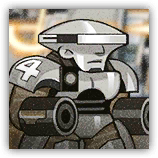
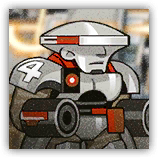

“交通亭”量产型 Mass-Produced "Turnpike"
远程 物理；精英 机械
|
 |
哥伦比亚沃尔沃特科钦斯基生产的机甲。由沃尔沃特科钦斯基领衔研发，集合了当下各领域技术结晶的战斗机甲。沃尔沃特科钦斯基本想用这套设计夺回国防部的青睐，最终却在万星园面前黯然失色。 |
“交通亭”量产型丨Mass-Produced "Turnpike"
大型构装（机械），无阵营
| AC 21 | 先攻 -1（9） |
| HP 168（16d10+80） | |
| 速度 25 尺 | |
| 调整 | 豁免 | 调整 | 豁免 | 调整 | 豁免 | |||||||||
|---|---|---|---|---|---|---|---|---|---|---|---|---|---|---|
| 力量 | 20 | +5 | +10 | 敏捷 | 8 | -1 | +4 | 体质 | 21 | +5 | +5 | |||
| 智力 | 14 | +2 | +2 | 感知 | 12 | +1 | +6 | 魅力 | 8 | -1 | -1 |
| 免疫 毒素；目盲，耳聋，力竭，麻痹，石化，中毒 |
| 感官 盲视10尺，被动察觉11 |
| 语言 无 |
| CR 12（XP 8,400；PB+4） |
特质 Traits
驾驶需求 Needs for Pilot。交通亭不被生物着装时，其处于昏迷状态。其仅能在此期间受外置面板指挥执行装甲解锁动作。
魔法抗性 Magic Resistence。交通亭为抵抗法术和其它魔法效应而作的体质豁免检定具有优势。
光能防御 Luminous Barrier（长休充能）。交通亭完成一次长休后，其获得30点临时生命值。此临时生命值存在时，交通亭每次受到的任何伤害都具有-4减值。
结构缺陷 Structural Defects。对交通亭发动的攻击即便失手也会造成至多5点伤害。
稳定底盘 Stable Chassis。在对抗造成倒地状态或强制位移的效应时，交通亭的体型视为大一级的体型，且所作的力量或体质豁免检定具有优势。
动作 Actions
多重攻击 Multiattack。交通亭发动两次星光炮攻击。
星光炮 Starlight Cannon。近战或远程攻击检定：+10，触及5尺或射程120尺。命中：43（6d10+10）力场伤害。
装甲解锁 Armor Unlocks。交通亭开放装甲结构，允许一个中型或更小的生物进入自己体内或从中离开。处于装甲内期间，目标对外界的攻击或其他效应而言处于全身掩护，但同时陷入失能。如果生物具有重甲熟练，则其可以在此失能期间通过意识操纵交通亭的行动。
反应 Actions
护盾力场 Shield Stance。触发：交通亭未处于浴血，并即将遭受攻击。响应：直到本回合结束前，交通亭的AC获得+4加值。
“交通亭”试做型 Prototype "Turnpike"
近战 物理；精英 机械
|
 |
哥伦比亚沃尔沃特科钦斯基生产的机甲。由沃尔沃特科钦斯基领衔研发，集合了当下各领域技术结晶的战斗机甲。若是能够将造价压到某一个水平进行大规模量产，或许确实能在未来改变战争的形式。 |
“交通亭”试做型丨Prototype "Turnpike"
大型构装（机械），无阵营
| AC 21 | 先攻 -1（9） |
| HP 189（18d10+90） | |
| 速度 25 尺 | |
| 调整 | 豁免 | 调整 | 豁免 | 调整 | 豁免 | |||||||||
|---|---|---|---|---|---|---|---|---|---|---|---|---|---|---|
| 力量 | 22 | +6 | +11 | 敏捷 | 8 | -1 | +4 | 体质 | 21 | +5 | +5 | |||
| 智力 | 14 | +2 | +2 | 感知 | 14 | +2 | +7 | 魅力 | 8 | -1 | -1 |
| 免疫 毒素；目盲，耳聋，力竭，麻痹，石化，中毒 |
| 感官 盲视10尺，被动察觉11 |
| 语言 无 |
| CR 15（XP 13,000；PB+5） |
特质 Traits
驾驶需求 Needs for Pilot。交通亭不被生物着装时，其处于昏迷状态。其仅能在此期间受外置面板指挥执行装甲解锁动作。
魔法抗性 Magic Resistence。交通亭为抵抗法术和其它魔法效应而作的体质豁免检定具有优势。
光能防御 Luminous Barrier（长休充能）。交通亭完成一次长休后，其获得40点临时生命值。此临时生命值存在时，交通亭每次受到的任何伤害都具有-5减值。
结构缺陷 Structural Defects。对交通亭发动的攻击即便失手也会造成至多5点伤害。
稳定底盘 Stable Chassis。在对抗造成倒地状态或强制位移的效应时，交通亭的体型视为大一级的体型，且所作的力量或体质豁免检定具有优势。
动作 Actions
多重攻击 Multiattack。交通亭发动两次星光炮攻击。
星光炮 Starlight Cannon。近战或远程攻击检定：+10，触及5尺或射程120尺。命中：43（8d10+10）力场伤害。
装甲解锁 Armor Unlocks。交通亭开放装甲结构，允许一个中型或更小的生物进入自己体内或从中离开。处于装甲内期间，目标对外界的攻击或其他效应而言处于全身掩护，但同时陷入失能。如果生物具有重甲熟练，则其可以在此失能期间通过意识操纵交通亭的行动。
反应 Actions
护盾力场 Shield Stance。触发：交通亭未处于浴血，并即将遭受攻击。响应：直到本回合结束前，交通亭的AC获得+5加值。